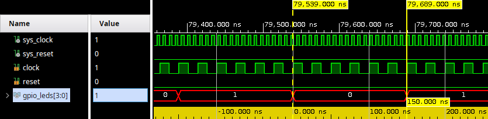
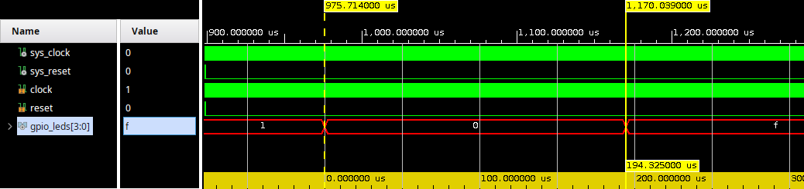

A typical microcontroller has a timer. Although this is a fairly basic component, it has many useful applications. Therefore, adding a timer to your RISC-V microcontroller is the first extension that will be made.
A textbook exercise could be: Toggle a LED roughly every 500 ms and with each fourth period, toggle all the LEDS.
The first way of making a solution for this exercise can be to make it in software.
The counter that is used for the for-loop can be reused. If the 4 LSBs are zero, it divisable by 16. In the other case when 3 LSBs are zero, it is divisable by 8 and for all other cases, the default character can be printed. The image below shows the output of this program and it indeed shows what was requested.
#define LED_BASEAxDDRESS 0x80000000
#define LED_REG0_ADDRESS (LED_BASEAxDDRESS + 0*4)
#define LED (*(volatile unsigned int *) LED_REG0_ADDRESS)
void main(void) {
unsigned int counter=1;
while(1) {
if (counter == 4) {
counter = 0;
LED = 0xFFFFFFFF;
} else {
counter += 1;
LED = 0x1;
}
LED = 0x0;
}
}
BUT … what with the timing?  The time between subsequent writes can be measured by inspecting the waveforms of the simulation. With 120 ns between subsequent writes, the RISC-V implementation is too quick to meet the timing requirements of the exercise.
The C-code can be altered so there is wait statement.
Note that the variable i is declared as a volatile variable. It implies that the value of this variable can be altered by another source. This results in not having the compiler optimise this part away.
With the individual for-loop in the wait function iterating 20 times, the duration between subsequent writes increases to 155'520 ns. 
#define LED_BASEAxDDRESS 0x80000000
#define LED_REG0_ADDRESS (LED_BASEAxDDRESS + 0*4)
#define LED (*(volatile unsigned int *) LED_REG0_ADDRESS)
#define WAIT_IMIT 20
void wait() {
volatile unsigned int i,j ;
for (i=0; i<WAIT_IMIT; i++)
for (j=0; j<WAIT_IMIT; j++);
}
void main(void) {
unsigned int counter=1;
while(1) {
if (counter == 4) {
counter = 1;
LED = 0xFFFFFFFF;
} else {
counter += 1;
LED = 0x1;
}
wait();
LED = 0x0;
wait();
}
}
If the wait-loop is iterated 25 times, the duration increases to 239'220 ns. There is a linear relationship between the number of loop iterations (x) and the duration (y) that follows the equation: y = a*x + b. Two points on this curve are known by counting waveforms: (20, 155520) and (25, 239220). This allows to solve the equation to y = 16'740*x - 179'280. When targeting a duration of 500'000'000 ns is targeted, x can be calculated to be 2'997.5675. Given only integers can be used, this would introduce a small error.